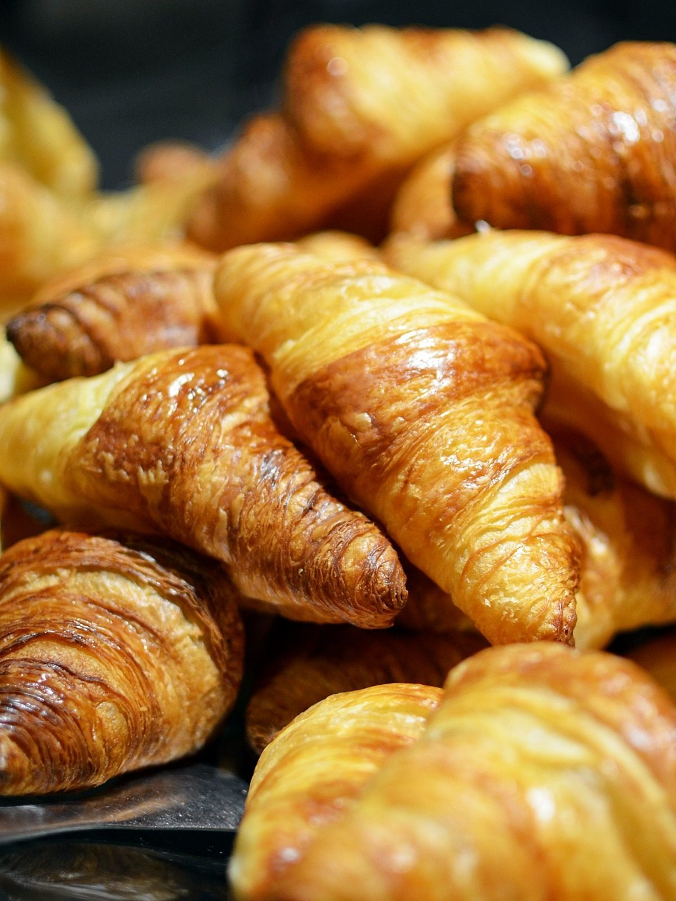
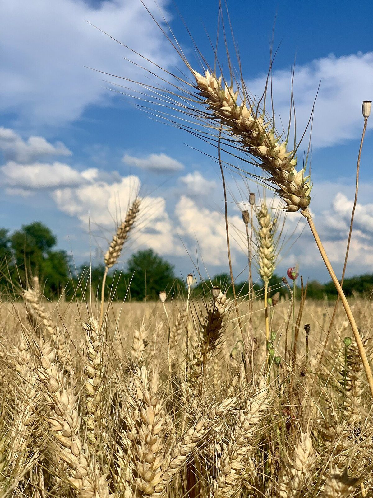
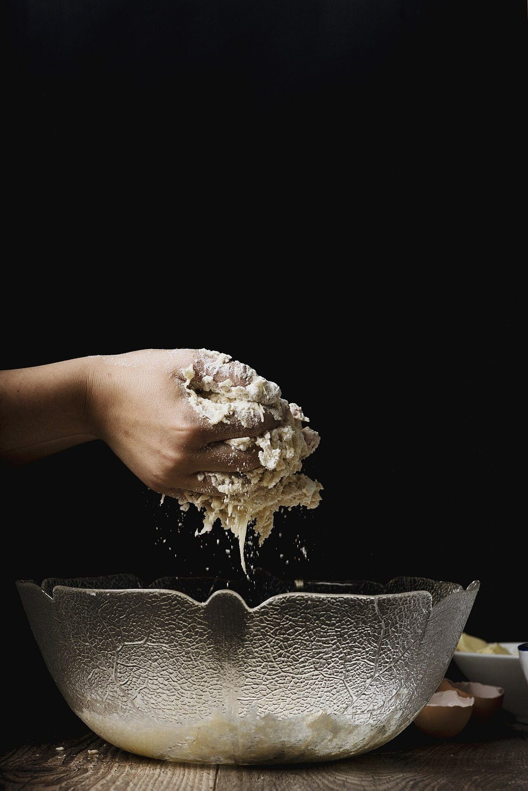

PROCEDURE
実験の手順(制作側の見立て)
店名の「Bake(焼く)」「Lab(研究室)」から、制作側が想像して書いた読み物です。お店の考えを紹介するものではありません。
- 01
火を見る
焼く、は、熱と時間を見きわめる作業。窯の前で色の変わるのを待つ時間を思い描きました。
- 02
粉をはかる
粉、水、塩。シンプルな材料ほど、ちょっとした違いが表に出る。研究室という名前に、そんな探究心を重ねています。
- 03
焼き上がりを記録する
うまくいった日も、そうでない日も、ノートに書いて次へ。そうやって育つお店の姿を想像しています。
SPECIMENS
標本棚(イメージ)
以下はお店の商品ではなく、他の土地で撮影されたフリー素材の写真です。



FIELD
津軽の町、黒石で。
お店があるのは、青森県黒石市の山形町です。黒石は津軽地方にある町で、木造のひさし「こみせ」が続く通りでも知られています。どんな粉や素材を使い、どんなパンを焼いているのか、詳しいことはこれからお店の情報をいただいて載せていきます。
こちらの写真は黒石ではなく、他の土地で撮影された麦畑などのイメージです。


DATA
ご案内
| 所在地 | 〒036-0364 青森県黒石市山形町75-3 |
|---|---|
| 電話 | なし |
| 営業時間 | 準備中 |
| 定休日 | 準備中 |
| 駐車場 | 準備中 |
| SNS | Instagram(bake_lab_m) |